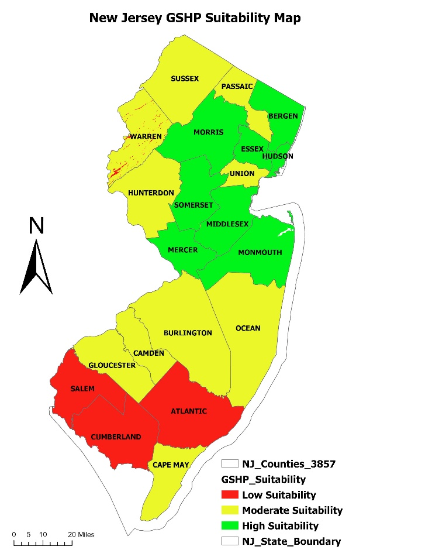

★ Thesis Research
Spatial Analysis of Residential GSHP Adoption Potential in New Jersey
GIS-based multi-criteria weighted overlay analysis identifying priority counties for Ground Source Heat Pump deployment across all 21 NJ counties, integrating bedrock thermal conductivity, building permits, income, and population density.
Key Finding
72.6% of NJ bedrock shows Excellent thermal conductivity — economic factors, not geology, are the binding constraint on GSHP adoption.
ArcGIS ProWeighted OverlayRaster ReclassificationZonal StatisticsACS CensusNJDEP Geology